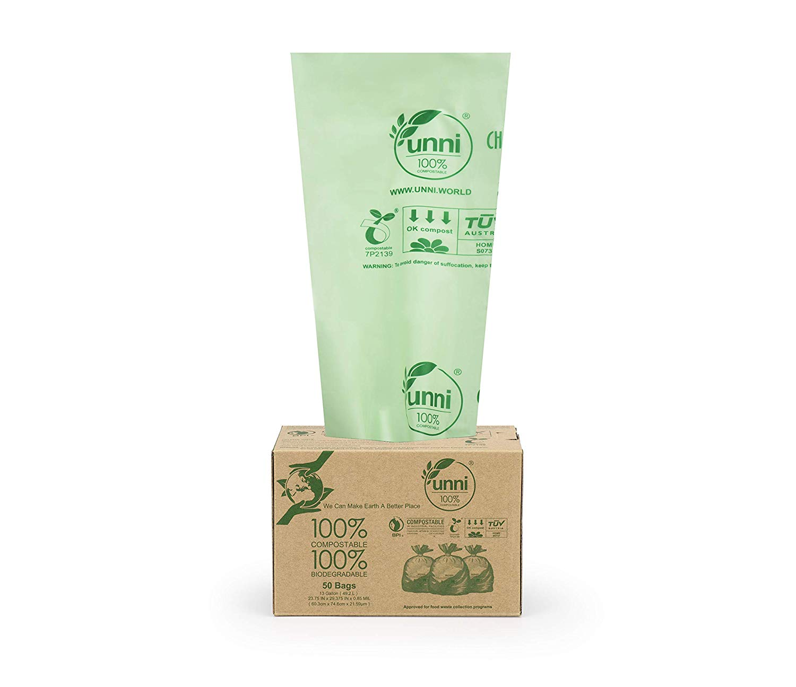

Bio-degradable Bags - UNNI ASTM D6400

Price: MYR 69.72 @ Amazon
About the product
- 13 Gallon / 49.2 Liter capacity; Size: 23.75 in x 29.375 in x 0.85 Mils; 50 Bags Per Roll
- USAGE & STORAGE: Avoid excessive heat, store Compostable Bags in a cool, dry place and used within one year of purchase. DO NOT PURCHASE more than you can use in a year.
- HIGHEST BIOBASED CONTENT: UNNI Compostable Bags are made from the starches of plants, and contains NO polyethylene. These bags are durable and reliable while is good for the environment.
- CERTIFIED IN U.S. & EUROPE: Denotes certification by the Biodegradable Products Institute (BPI) with the U.S. standard ASTM D6400. Also certified by European OK Compost Home as compostable in backyard or home composting facilities,this is one of the world’s only home composting certifications and it is based on the European standard EN 13432.
- Ideal use as kitchen trash bag, food waste collection bag, and other organic waste collection bag. Used one compostable bag means one fewer plastic bag used. Together, we can make our home earth a better and more sustainable place. Thank You for thinking about the environment. You are our hero!